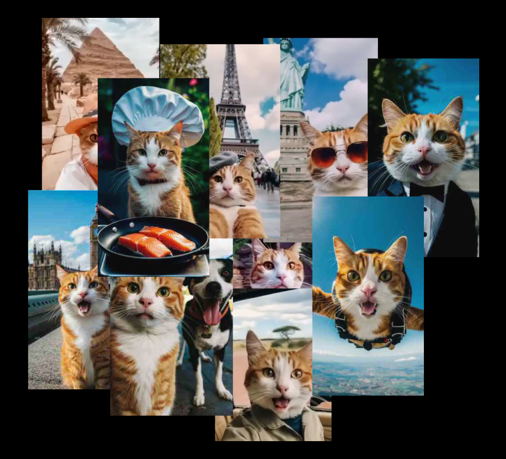
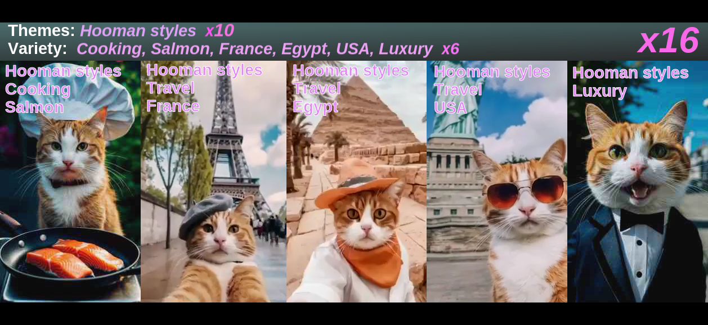
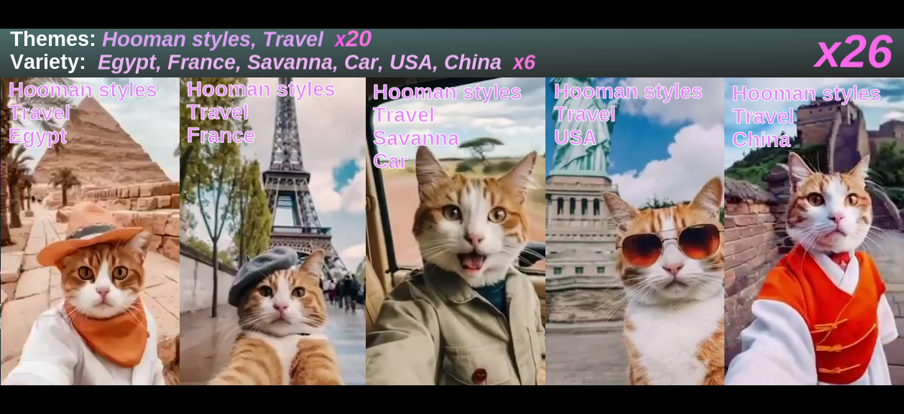

Viralborn visual
Yksinkertaistettu kuvaus miten videoklipeistä luodaan kokonaisia videoita ja miten ne pisteytetään.
Esimerkkinä ihmisinfluenceria matkiva kissa, jolla on seuraavaa videota varten käytettävissä tällaiset klipit:

Klipit voi järjestää tagien mukaan. Niitä raahataan "videoeditoriin". Seuraavassa kuvassa videoeditoriin on raahattu viisi satunnaista klippiä:
Editori kertoo että videossa ei ole teemaa, vaihtelua on useiden tagien muodossa ja lopullinen tykkäyskerroin on 8. Yritetäänpä uudelleen käyttämällä vain videoita, joissa kissalla on ihmisvaatteet:

Kun tietty tagi löytyy kaikista videoklipeistä saadaan teeman avulla suuri tykkäyskerroin. Lisäksi on hyvä olla mahdollisimman paljon vaihtelua teeman sisällä. Lopullinen tykkäyskerroin 16. Vieläkin taitaa olla parannettavaa!

Tykkäyskerroin 26! Tällä mennään. Valitaan (tässä tapauksessa kuvitellaan) vielä sopiva musiikki ja video on valmis: